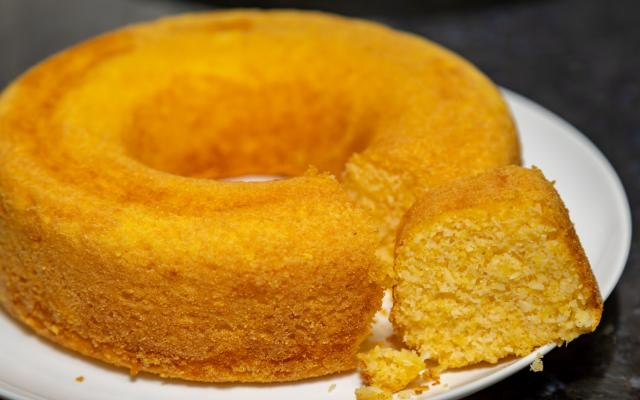

Bolo de fuba

Ingredientes
- 4 ovos
- 3 xícaras de açúcar
- 1 e 1/2 xícara de fubá
- 100 g de queijo ralado
- 4 xícaras de leite
- 2 colheres de farinha de trigo
- 2 colheres de margarina
- 1 colher de fermento em pó
Modo de preparo
- Em um liquidificador, misture todos os ingredientes até obter uma consistência cremosa.
- Despeje a massa em uma forma untada e polvilhada com farinha de trigo
- Asse em forno médio (180° C), preaquecido, por 40 minutos.
- Sirva frio.